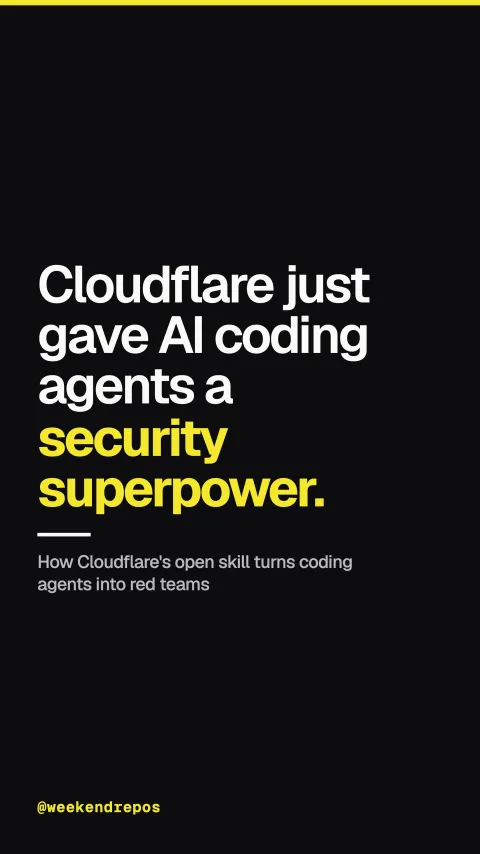

cloudflare/security-audit-skill
How Cloudflare's open skill turns coding agents into red teams

Cloudflare just gave AI coding agents a security superpower.
Phase one and two map attack surfaces and launch hunting swarms.
First, the agent conducts systematic reconnaissance, mapping trust boundaries and public entry points, then deploys coverage-led subagent swarms to hunt for flaws.
Phases 1-2 · Reconnaissance & coverage-led hunting
Phase three isolates vulnerabilities and writes reproduction test cases.
Second, instead of reporting hypothetical bugs, the skill forces the agent to build isolated proof-of-concept tests inside a sandbox to confirm each vulnerability.
Phase 3 · Sandbox validation & PoC exploit generation
Phase four and five filter hallucinations with independent verification.
Third, an independent verification pass checks every candidate finding against the codebase, aggressively pruning false positives and LLM hallucinations.
Phases 4-5 · Zero false positive verification gate
Emits machine-readable SARIF reports with automated remediation patches.
Fourth, the skill generates machine-readable SARIF and JSON reports with exact remediation diffs, ready for GitHub Security tabs and pull request reviews.
Phase 6 · SARIF output & automated pull request patches
Free. MIT licensed. Built for Claude Code and Cursor.
It's completely free and open source under MIT from Cloudflare, built directly for Claude Code and agentic workflows.
cloudflare/security-audit-skill · MIT · Markdown & Skill